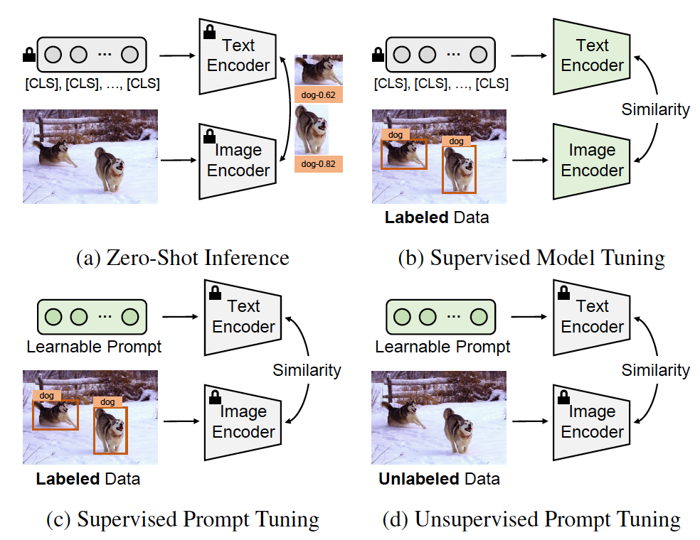
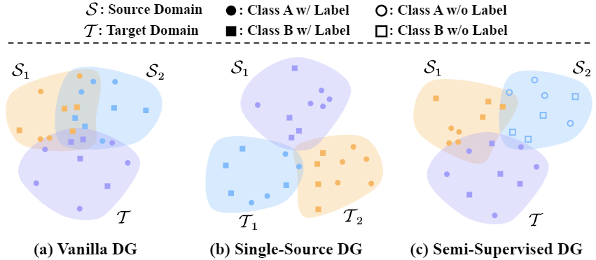

Luojun Lin (林洛君)
Assistant Professor |
About me
I am currently an assistant professor at Fuzhou University. I've received the bachelor degree from Yunnan University in 2014, and the PhD degree (supervised by Prof. Lianwen Jin) from South China University of Technology in 2020. I joined the Department of Computer Science of Fuzhou University in 2020.
My research area is deep learning and computer vision, with special interests in self-supervised learning, unsupervised domain adaptation, domain generalization, and face affective computing.
Preprints
|
Adapt Anything: Tailor Any Image Classifiers across Domains And Categories Using Text-to-Image Diffusion Models
Weijie Chen, Haoyu Wang, Shicai Yang, Lei Zhang, Wei Wei, Yanning Zhang, Luojun Lin*, Di Xie*, Yueting Zhuang* Arxiv. 2023 Paper | |
Publications (* represents corresponding author)
|
A Multiple Prediction Mechanisms Ensemble for Complex Remote Sensing Scenes
Qifeng Lin+, Luojun Lin+, Yuanlong Yu, Gang Fu (+ co-first authors) ACM Multimedia (MM), 2023. (CCF-A conference) Paper | |
|
Distilling Vision-Language Foundation Models: A Data-Free Approach via Prompt Diversification
Yunyi Xuan, Weijie Chen, Shicai Yang, Di Xie, Luojun Lin, Yueting Zhuang ACM Multimedia (MM), 2023. (CCF-A conference) Paper | |
|
Periodically Exchange Teacher-Student for Source-Free Object Detection
Qipeng Liu, Luojun Lin*, Zhifeng Shen, Zhifeng Yang International Conference on Computer Vision (ICCV), 2023. (CCF-A conference) Paper | |
|
Better Together: Data-Free Multi-Student Coevolved Distillation
Weijie Chen, Yunyi Xuan, Shicai Yang, Di Xie, Luojun Lin*, Yueting Zhuang* Knowledge-Based System, 2023. (JCR Q1 journal) Paper | |
|  |
Unsupervised Prompt Tuning for Text-Driven Object Detection
Weizhen He, Weijie Chen, Binbin Chen, Shicai Yang, Di Xie, Luojun Lin, Donglian Qi, Yueting Zhuang International Conference on Computer Vision (ICCV), 2023. (CCF-A conference) Paper | |
|
FBPFormer: Dynamic Convolutional Transformer for Global-Local-Contexual Facial Beauty Prediction
Qipeng Liu, Luojun Lin*, Zhifeng Shen, Yuanlong Yu International Conference on Artificial Neural Networks, 2023. (CCF-C conference) Paper | |

|
Run and Chase: Towards Accurate Source-Free Domain Adaptive Object Detection
Luojun Lin, Zhifeng Yang, Qipeng Liu, Yuanlong Yu*, Qifeng Lin* IEEE International Conference on Multimedia & Expo (ICME) , 2023. (CCF-B conference) Paper | |
|  |
Adapt then Generalize: A Simple Two-Stage Framework for Semi-Supervised Domain Generalization
Han Xie, Zhifeng Shen, Shicai Yang, Weijie Chen, Luojun Lin* IEEE International Conference on Multimedia & Expo (ICME), 2023. (CCF-B conference) Paper | |
|
Customized Face Beautification
Wang Chen, PeiZhen Chen, Weijie Chen, Luojun Lin* IEEE International Conference on Acoustics, Speech, & Signal Processing (ICASSP), 2023. (CCF-B conference) Paper | |
|
Slimmable Domain Adaptation
Rang Meng, Weijie Chen, Shicai Yang, Jie Song, Luojun Lin, Di Xie, Shiliang Pu, Xinchao Wang, Mingli Song, Yueting Zhuang Computer Vision and Pattern Recognition (CVPR), 2022. (CCF-A conference) Paper | Code | Supplementary | |
|
SynSig2Vec: Learning Representations from Synthetic Dynamic Signatures for Real-World Verification
Songxuan Lai, Lianwen Jin, Luojun Lin, Yecheng Zhu, Huiyun Mao Proceedings of the AAAI Conference on Artificial Intelligence (AAAI), 2020. (CCF-A conference) Paper | |